Last updated: 2025-06-02
Checks: 7 0
Knit directory: prs/
This reproducible R Markdown analysis was created with workflowr (version 1.7.1). The Checks tab describes the reproducibility checks that were applied when the results were created. The Past versions tab lists the development history.
Great! Since the R Markdown file has been committed to the Git repository, you know the exact version of the code that produced these results.
Great job! The global environment was empty. Objects defined in the global environment can affect the analysis in your R Markdown file in unknown ways. For reproduciblity it’s best to always run the code in an empty environment.
The command set.seed(20250417) was run prior to running
the code in the R Markdown file. Setting a seed ensures that any results
that rely on randomness, e.g. subsampling or permutations, are
reproducible.
Great job! Recording the operating system, R version, and package versions is critical for reproducibility.
Nice! There were no cached chunks for this analysis, so you can be confident that you successfully produced the results during this run.
Great job! Using relative paths to the files within your workflowr project makes it easier to run your code on other machines.
Great! You are using Git for version control. Tracking code development and connecting the code version to the results is critical for reproducibility.
The results in this page were generated with repository version e8f339e. See the Past versions tab to see a history of the changes made to the R Markdown and HTML files.
Note that you need to be careful to ensure that all relevant files for
the analysis have been committed to Git prior to generating the results
(you can use wflow_publish or
wflow_git_commit). workflowr only checks the R Markdown
file, but you know if there are other scripts or data files that it
depends on. Below is the status of the Git repository when the results
were generated:
Ignored files:
Ignored: .DS_Store
Ignored: .Rhistory
Ignored: .Rproj.user/
Ignored: analysis/.DS_Store
Ignored: analysis/.Rhistory
Ignored: analysis/figure/
Ignored: data/.DS_Store
Untracked files:
Untracked: analysis/asthma_lung/
Untracked: analysis/asthma_wb/
Untracked: analysis/continuous_artery/
Untracked: analysis/continuous_wb/
Untracked: analysis/continuous_wb_m1/
Untracked: analysis/continuous_wb_m2/
Untracked: analysis/metadata.txt
Untracked: analysis/metadata_artery.txt
Untracked: analysis/metadata_artery_quantile.txt
Untracked: analysis/metadata_lung_asthma.txt
Untracked: analysis/metadata_lung_asthma_quantile.txt
Untracked: analysis/metadata_quantile.txt
Untracked: analysis/metadata_wb_asthma.txt
Untracked: analysis/metadata_wb_asthma_quantile.txt
Untracked: analysis/normalized_counts.rda
Untracked: analysis/prs_asthma.txt
Untracked: analysis/quantile_artery/
Untracked: analysis/quantile_wb/
Untracked: analysis/quantile_wb_m1/
Untracked: analysis/quantile_wb_m2/
Untracked: analysis/vst norm counts.rda
Untracked: data/Artery_Aorta.v8.covariates.txt
Untracked: data/GTEx_v8.bk
Untracked: data/GTEx_v8.rds
Untracked: data/Lung.v8.covariates.txt
Untracked: data/PGS001787.txt
Untracked: data/PGS001787_hmPOS_GRCh38.txt
Untracked: data/T2D_hmPOS_GRCh38.txt
Untracked: data/Whole_Blood.v8.covariates.txt
Untracked: data/blood_cell/
Untracked: data/endotype_sumstats/
Untracked: data/gene_reads_2017-06-05_v8_artery_aorta.gct
Untracked: data/gene_reads_2017-06-05_v8_lung.gct
Untracked: data/gene_reads_2017-06-05_v8_whole_blood.gct
Untracked: data/immune/
Untracked: data/pca.eigenval
Untracked: data/pca.eigenvec
Untracked: data/protein-coding_gene.txt
Untracked: lung_exp_count.csv
Untracked: metadata_asthma_m2.csv
Untracked: metadata_lung_asthma_M2.csv
Untracked: metadata_lung_asthma_quantile_M2.csv
Untracked: metadata_quantile_asthma_m2.csv
Untracked: wb_exp_count.csv
Unstaged changes:
Modified: analysis/PRS.Rmd
Deleted: analysis/QC.Rmd
Modified: analysis/asthma_wb.Rmd
Deleted: analysis/normalized_counts.txt
Modified: analysis/prs_blood_cell.txt
Modified: prs.Rproj
Note that any generated files, e.g. HTML, png, CSS, etc., are not included in this status report because it is ok for generated content to have uncommitted changes.
These are the previous versions of the repository in which changes were
made to the R Markdown (analysis/asthma_lung.Rmd) and HTML
(docs/asthma_lung.html) files. If you’ve configured a
remote Git repository (see ?wflow_git_remote), click on the
hyperlinks in the table below to view the files as they were in that
past version.
| File | Version | Author | Date | Message |
|---|---|---|---|---|
| Rmd | e8f339e | ElisaChen | 2025-06-02 | workflowr::wflow_publish("analysis/asthma_lung.Rmd") |
| html | 36ca2c8 | ElisaChen | 2025-05-30 | Build site. |
| Rmd | 5146127 | ElisaChen | 2025-05-30 | workflowr::wflow_publish(c("analysis/index.Rmd", "analysis/asthma_wb.Rmd", |
# load prs & pcs
metadata_file <- "analysis/metadata_lung_asthma.txt"
metadata <- read.csv(metadata_file, header = T, sep = "\t", stringsAsFactors = T)
metadata$sex <- as.factor(metadata$sex)
traits <- metadata$asthma
pc <- metadata[, c(1:5)]
# Calculate the correlation between each trait and each PC
correlation_matrix <- cor(traits, pc)
range(correlation_matrix)[1] -0.1441741 0.1685583correlation_matrix <- t(correlation_matrix)
correlation_matrix [,1]
PC1 0.168558314
PC2 0.005256598
PC3 -0.144174130
PC4 0.083689022
PC5 -0.083910604# Load the gene expression data
gene_expr_file <- "data/gene_reads_2017-06-05_v8_lung.gct"
raw_count_df <- fread(gene_expr_file, header = TRUE, sep = "\t", drop = "id")
# load protein_coding list
protein_coding <- fread("data/protein-coding_gene.txt", sep = "\t")
protein_coding <- protein_coding[, c("symbol", "ensembl_gene_id")]
# keep only protein-coding genes
raw_count_df <- raw_count_df[raw_count_df$Description %in% protein_coding$symbol, ]
id <- raw_count_df$Name
raw_count <- raw_count_df[, -c(1:2)]
# modify GTEx sample names matching names used in PRS data
colnames(raw_count) <- sub("^(GTEX-[^-.]+).*", "\\1", colnames(raw_count))
matching_samples <- intersect(rownames(metadata), colnames(raw_count))
final_count <- raw_count[ , ..matching_samples]
# prefilter: keep only rows that have a count of at least 10
keep_genes <- rowSums(final_count >= 10) > 0
final_count <- final_count[keep_genes, ]
id <- id[keep_genes]
dim(final_count)
prs_trait <- scale(traits) # Standardize PRS to mean = 0, sd = 1
# Add the standardized PRS to the metadata for continuous trait
metadata$asthma <- scale(metadata$asthma)
# Create the DESeqDataSet for the current trait
dds <- DESeqDataSetFromMatrix(
countData = as.matrix(final_count), # Raw counts
colData = metadata,
design = as.formula("~ PC1 + PC2 + PC3 + PC4 + PC5 + sex + asthma")
)
rownames(dds) <- id
# Run DESeq2 analysis
dds <- DESeq(dds, parallel = TRUE, BPPARAM = MulticoreParam(4))
# Get the results for the current trait
res <- results(dds)
# Save the results to a file
write.csv(res, "differential_expression_asthma_results.csv")
# print a summary of the results
print(paste("Results for trait: asthma"))
print(summary(res))
# plot the MA-plot for the current trait
png(paste0("ma_plot_asthma.png"), width = 800, height = 600)
plotMA(res, main = paste("Continuous: MA Plot for Asthma"))
dev.off()
# volcano plot
res_tableOE <- as.data.frame(res)
res_tableOE$gene_name <- raw_count_df$Description[keep_genes]
res_tableOE <- mutate(res_tableOE, threshold_OE = padj < 0.1)
res_tableOE <- res_tableOE %>% arrange(padj) %>% mutate(genelabels = "")
res_tableOE$genelabels[1:10] <- res_tableOE$gene_name[1:10]
volcano_plot <- ggplot(res_tableOE, aes(x = log2FoldChange, y = -log10(padj))) +
geom_point(aes(colour = threshold_OE)) +
geom_text_repel(aes(label = genelabels)) +
ggtitle(paste("Continuous: Volcano Plot for Asthma")) +
xlab("log2 fold change") +
ylab("-log10 adjusted p-value") +
theme(legend.position = "none",
plot.title = element_text(size = rel(1.5), hjust = 0.5),
axis.title = element_text(size = rel(1.25)))
# Save the volcano plot
png(paste0("volcano_plot_asthma.png"), width = 800, height = 600)
print(volcano_plot)
dev.off()deGenes <- res_tableOE[res_tableOE$padj < 0.1 &
abs(res_tableOE$log2FoldChange) >= 0.5, ]
deGenes$gene_id <- gsub("\\.\\d+$", "", rownames(deGenes))
# Separate upregulated and downregulated genes
upregulated_genes <- deGenes[deGenes$log2FoldChange > 0, ]$gene_id
downregulated_genes <- deGenes[deGenes$log2FoldChange < 0, ]$gene_id
# Run GO enrichment for upregulated genes
gse_up <- enrichGO(gene = upregulated_genes, ont = "BP",
OrgDb = "org.Hs.eg.db", keyType = "ENSEMBL", readable = T)
# Run GO enrichment for downregulated genes
gse_down <- enrichGO(gene = downregulated_genes, ont = "BP",
OrgDb = "org.Hs.eg.db", keyType = "ENSEMBL", readable = T)
# Convert enrichment results to data frames and calculate additional ratios
gse_up <- as.data.frame(gse_up)
gse_down <- as.data.frame(gse_down)
gse_up$GeneRatio_num <- as.numeric(sapply(strsplit(gse_up$GeneRatio, "/"), function(x) x[1])) /
as.numeric(sapply(strsplit(gse_up$GeneRatio, "/"), function(x) x[2]))
gse_up$BgRatio_num <- as.numeric(sapply(strsplit(gse_up$BgRatio, "/"), function(x) x[1])) /
as.numeric(sapply(strsplit(gse_up$BgRatio, "/"), function(x) x[2]))
gse_up <- cbind(gse_up, FoldEnrich = gse_up$GeneRatio_num / gse_up$BgRatio_num)
gse_down$GeneRatio_num <- as.numeric(sapply(strsplit(gse_down$GeneRatio, "/"), function(x) x[1])) /
as.numeric(sapply(strsplit(gse_down$GeneRatio, "/"), function(x) x[2]))
gse_down$BgRatio_num <- as.numeric(sapply(strsplit(gse_down$BgRatio, "/"), function(x) x[1])) /
as.numeric(sapply(strsplit(gse_down$BgRatio, "/"), function(x) x[2]))
gse_down <- cbind(gse_down, FoldEnrich = gse_down$GeneRatio_num / gse_down$BgRatio_num)
if (nrow(gse_up) >= 20) {
enrich_plot_up <- plotEnrich(gse_up[1:20,], plot_type = "dot", scale_ratio = 0.5) +
labs(title = "Continuous: Upregulated Enrichment Pathways for Asthma") +
theme(plot.title = element_text(size = 10))
}else{
enrich_plot_up <- plotEnrich(gse_up, plot_type = "dot", scale_ratio = 0.5) +
labs(title = "Continuous: Upregulated Enrichment Pathways for Asthma") +
theme(plot.title = element_text(size = 10))
}
if (nrow(gse_down) >= 20) {
enrich_plot_down <- plotEnrich(gse_down[1:20,], plot_type = "dot", scale_ratio = 0.5) +
labs(title = "Continuous: Downregulated Enrichment Pathways for Asthma") +
theme(plot.title = element_text(size = 10))
}else{
enrich_plot_down <- plotEnrich(gse_down, plot_type = "dot", scale_ratio = 0.5) +
labs(title = "Continuous: Downregulated Enrichment Pathways for Asthma") +
theme(plot.title = element_text(size = 10))
}
# Arrange the two plots side by side
combined_plot <- grid.arrange(enrich_plot_up, enrich_plot_down, ncol = 2)
# Save the combined plot
ggsave("enrichment_plot_asthma.png", plot = combined_plot, width = 12, height = 6)
# Save the GO enrichment results to CSV
write.csv(gse_up, "GO_enrichment_asthma_upregulated.csv")
write.csv(gse_down, "GO_enrichment_asthma_downregulated.csv")metadata_file <- "analysis/metadata_lung_asthma_quantile.txt"
metadata <- read.csv(metadata_file, header = T, sep = "\t", stringsAsFactors = T)
metadata$sex <- as.factor(metadata$sex)
# Create the DESeqDataSet for the current trait
dds <- DESeqDataSetFromMatrix(
countData = as.matrix(final_count),
colData = metadata,
design = as.formula("~ PC1 + PC2 + PC3 + PC4 + PC5 + sex + asthma")
)
rownames(dds) <- id
# Run DESeq2 analysis
dds <- DESeq(dds, parallel = TRUE, BPPARAM = MulticoreParam(4))
# Get the results for the current trait
res <- results(dds)
# Save the results to a file
write.csv(res, "differential_expression_asthma_quantile_results.csv")
# print a summary of the results
print(paste("Results for trait: asthma"))
print(summary(res))
# plot the MA-plot for the current trait
png(paste0("ma_plot_quantile_asthma.png"), width = 800, height = 600)
plotMA(res, main = paste("Quantile: MA Plot for Asthma"))
dev.off()
# volcano plot
res_tableOE <- as.data.frame(res)
res_tableOE$gene_name <- raw_count_df$Description[keep_genes]
res_tableOE <- mutate(res_tableOE, threshold_OE = padj < 0.1)
res_tableOE <- res_tableOE %>% arrange(padj) %>% mutate(genelabels = "")
res_tableOE$genelabels[1:10] <- res_tableOE$gene_name[1:10]
volcano_plot <- ggplot(res_tableOE, aes(x = log2FoldChange, y = -log10(padj))) +
geom_point(aes(colour = threshold_OE)) +
geom_text_repel(aes(label = genelabels)) +
ggtitle(paste("Quantile: Volcano Plot for Asthma")) +
xlab("log2 fold change") +
ylab("-log10 adjusted p-value") +
theme(legend.position = "none",
plot.title = element_text(size = rel(1.5), hjust = 0.5),
axis.title = element_text(size = rel(1.25)))
# Save the volcano plot
png(paste0("volcano_plot_quantile_asthma.png"), width = 800, height = 600)
print(volcano_plot)
dev.off()deGenes <- res_tableOE[res_tableOE$padj < 0.1 &
abs(res_tableOE$log2FoldChange) >= 0.5, ]
deGenes$gene_id <- gsub("\\.\\d+$", "", rownames(deGenes))
# Separate upregulated and downregulated genes
upregulated_genes <- deGenes[deGenes$log2FoldChange > 0, ]$gene_id
downregulated_genes <- deGenes[deGenes$log2FoldChange < 0, ]$gene_id
# Run GO enrichment for upregulated genes
gse_up <- enrichGO(gene = upregulated_genes, ont = "BP",
OrgDb = "org.Hs.eg.db", keyType = "ENSEMBL", readable = T)
# Run GO enrichment for downregulated genes
gse_down <- enrichGO(gene = downregulated_genes, ont = "BP",
OrgDb = "org.Hs.eg.db", keyType = "ENSEMBL", readable = T)
# Convert enrichment results to data frames and calculate additional ratios
gse_up <- as.data.frame(gse_up)
gse_down <- as.data.frame(gse_down)
gse_up$GeneRatio_num <- as.numeric(sapply(strsplit(gse_up$GeneRatio, "/"), function(x) x[1])) /
as.numeric(sapply(strsplit(gse_up$GeneRatio, "/"), function(x) x[2]))
gse_up$BgRatio_num <- as.numeric(sapply(strsplit(gse_up$BgRatio, "/"), function(x) x[1])) /
as.numeric(sapply(strsplit(gse_up$BgRatio, "/"), function(x) x[2]))
gse_up <- cbind(gse_up, FoldEnrich = gse_up$GeneRatio_num / gse_up$BgRatio_num)
gse_down$GeneRatio_num <- as.numeric(sapply(strsplit(gse_down$GeneRatio, "/"), function(x) x[1])) /
as.numeric(sapply(strsplit(gse_down$GeneRatio, "/"), function(x) x[2]))
gse_down$BgRatio_num <- as.numeric(sapply(strsplit(gse_down$BgRatio, "/"), function(x) x[1])) /
as.numeric(sapply(strsplit(gse_down$BgRatio, "/"), function(x) x[2]))
gse_down <- cbind(gse_down, FoldEnrich = gse_down$GeneRatio_num / gse_down$BgRatio_num)
if (nrow(gse_up) >= 20) {
enrich_plot_up <- plotEnrich(gse_up[1:20,], plot_type = "dot", scale_ratio = 0.4) +
labs(title = "Quantile: Upregulated Enrichment Pathways for Asthma") +
theme(plot.title = element_text(size = 6))
}else{
enrich_plot_up <- plotEnrich(gse_up, plot_type = "dot", scale_ratio = 0.4) +
labs(title = "Quantile: Upregulated Enrichment Pathways for Asthma") +
theme(plot.title = element_text(size = 6))
}
if (nrow(gse_down) >= 20) {
enrich_plot_down <- plotEnrich(gse_down[1:20,], plot_type = "dot", scale_ratio = 0.4) +
labs(title = "Quantile: Downregulated Enrichment Pathways for Asthma") +
theme(plot.title = element_text(size = 6))
}else{
enrich_plot_down <- plotEnrich(gse_down, plot_type = "dot", scale_ratio = 0.4) +
labs(title = "Quantile: Downregulated Enrichment Pathways for Asthma") +
theme(plot.title = element_text(size = 6))
}
# Arrange the two plots side by side
combined_plot <- grid.arrange(enrich_plot_up, enrich_plot_down, ncol = 2)
# Save the combined plot
ggsave("enrichment_plot_quantile_asthma.png", plot = combined_plot, width = 12, height = 6)
# Save the GO enrichment results to CSV
write.csv(gse_up, "GO_enrichment_quantile_asthma_upregulated.csv")
write.csv(gse_down, "GO_enrichment_quantile_asthma_downregulated.csv")# Load the gene expression data
gene_expr_file <- "data/gene_reads_2017-06-05_v8_lung.gct"
raw_count_df <- fread(gene_expr_file, header = TRUE, sep = "\t", drop = "id")
# load protein_coding list
protein_coding <- fread("data/protein-coding_gene.txt",
sep = "\t")
protein_coding <- protein_coding[, c("symbol", "ensembl_gene_id")]
# keep only protein-coding genes
raw_count_df <- raw_count_df[raw_count_df$Description %in% protein_coding$symbol, ]
id <- raw_count_df$Name
raw_count <- raw_count_df[, -c(1:2)]
# modify GTEx sample names matching names used in PRS data
colnames(raw_count) <- sub("^(GTEX-[^-.]+).*", "\\1", colnames(raw_count))
matching_samples <- intersect(rownames(metadata), colnames(raw_count))
final_count <- raw_count[ , ..matching_samples]
# prefilter: keep only rows that have a count of at least 10
keep_genes <- rowSums(final_count >= 10) > 0
final_count <- final_count[keep_genes, ]
id <- id[keep_genes]
dim(final_count)[1] 17297 515# obtain genotype PCs
geno_pc <- read.table("data/pca.eigenvec")
names(geno_pc) = c("FID","IID",paste0("geno_PC", c(1:(ncol(geno_pc)-2))))
geno_pc <- geno_pc[geno_pc$FID %in% matching_samples, ]
eigenval <- scan("data/pca.eigenval")
pve <- data.frame(PC = 1:20, pve = eigenval/sum(eigenval)*100)
ggplot(geno_pc) + geom_point(aes(x = geno_PC1, y = geno_PC2)) +
labs(x = paste0("PC1 (", signif(pve$pve[1], 3), "%)"),
y = paste0("PC2 (", signif(pve$pve[2], 3), "%)")) + theme_classic()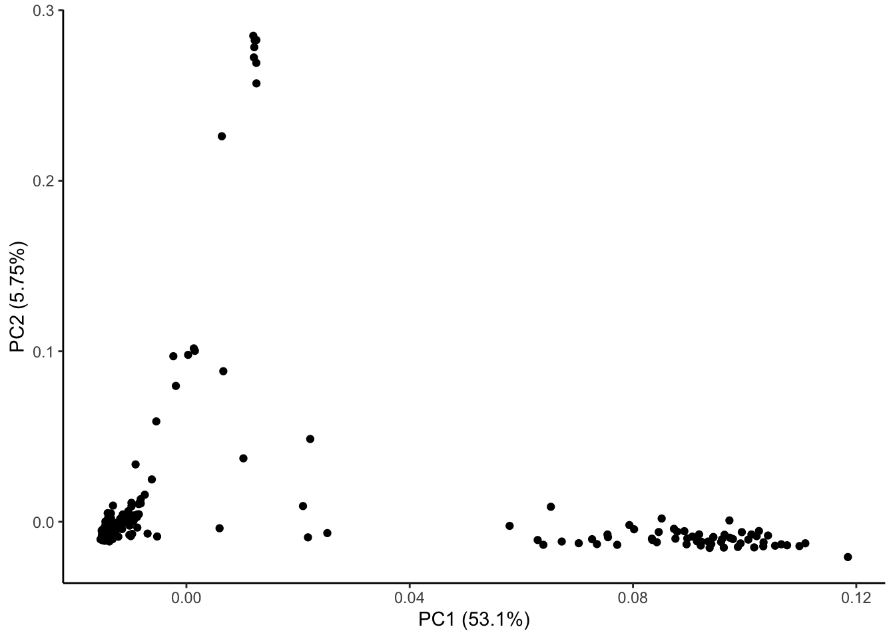
ggplot(geno_pc) + geom_point(aes(x = geno_PC1, y = geno_PC3)) +
labs(x = paste0("PC1 (", signif(pve$pve[1], 3), "%)"),
y = paste0("PC3 (", signif(pve$pve[3], 3), "%)")) + theme_classic()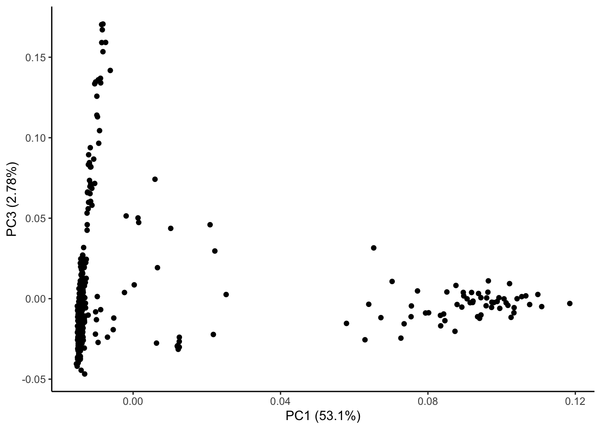
ggplot(pve, aes(PC, pve)) + geom_point() + geom_line() +
labs(x = "Genotype PC", y = "Percentage variance explained") + theme_classic()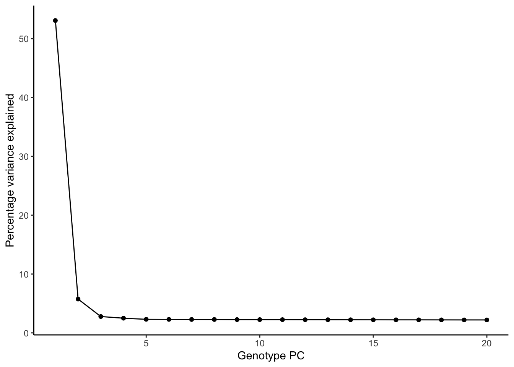
metadata_file <- "analysis/metadata_lung_asthma.txt"
metadata <- read.csv(metadata_file, header = T, sep = "\t")
metadata$sex <- as.factor(metadata$sex)
metadata <- cbind(metadata, geno_pc[,3:ncol(geno_pc)])
# Standardize PRS for the current trait
#prs_trait <- scale(metadata$asthma)
# Add the standardized PRS to the metadata for continuous trait
metadata$asthma <- scale(metadata$asthma)
# Create the DESeqDataSet for the current trait
dds <- DESeqDataSetFromMatrix(
countData = as.matrix(final_count), # Raw counts
colData = metadata[, 1:9],
design = as.formula("~ PC1 + PC2 + PC3 + PC4 + PC5 + sex + geno_PC1 + geno_PC2 + asthma")
)
rownames(dds) <- id
# Run DESeq2 analysis
dds <- DESeq(dds, parallel = TRUE, BPPARAM = MulticoreParam(4))
# Get the results for the current trait
res <- results(dds)
# Save the results to a file
write.csv(res, "differential_expression_asthma_results_M2.csv")
# print a summary of the results
print("Results for trait: Asthma")
print(summary(res))
# plot the MA-plot for the current trait
png(paste0("ma_plot_asthma_M2.png"), width = 800, height = 600)
plotMA(res, main = "Continuous (M2): MA Plot for Asthma")
dev.off()
# volcano plot
res_tableOE <- as.data.frame(res)
res_tableOE$gene_name <- raw_count_df$Description[keep_genes]
res_tableOE <- mutate(res_tableOE, threshold_OE = padj < 0.1)
res_tableOE <- res_tableOE %>% arrange(padj) %>% mutate(genelabels = "")
res_tableOE$genelabels[1:10] <- res_tableOE$gene_name[1:10]
volcano_plot <- ggplot(res_tableOE, aes(x = log2FoldChange, y = -log10(padj))) +
geom_point(aes(colour = threshold_OE)) +
geom_text_repel(aes(label = genelabels)) +
ggtitle("Continuous (M2): Volcano Plot for Asthma") +
xlab("log2 fold change") +
ylab("-log10 adjusted p-value") +
theme(legend.position = "none",
plot.title = element_text(size = rel(1.5), hjust = 0.5),
axis.title = element_text(size = rel(1.25)))
# Save the volcano plot
png(paste0("volcano_plot_asthma_M2.png"), width = 800, height = 600)
print(volcano_plot)
dev.off()deGenes <- res_tableOE[res_tableOE$padj < 0.1 &
abs(res_tableOE$log2FoldChange) >= 0.5, ]
deGenes$gene_id <- gsub("\\.\\d+$", "", rownames(deGenes))
# Separate upregulated and downregulated genes
upregulated_genes <- deGenes[deGenes$log2FoldChange > 0, ]$gene_id
downregulated_genes <- deGenes[deGenes$log2FoldChange < 0, ]$gene_id
# Run GO enrichment for upregulated genes
gse_up <- enrichGO(gene = upregulated_genes, ont = "BP",
OrgDb = "org.Hs.eg.db", keyType = "ENSEMBL", readable = T)
# Run GO enrichment for downregulated genes
gse_down <- enrichGO(gene = downregulated_genes, ont = "BP",
OrgDb = "org.Hs.eg.db", keyType = "ENSEMBL", readable = T)
# Convert enrichment results to data frames and calculate additional ratios
gse_up <- as.data.frame(gse_up)
gse_down <- as.data.frame(gse_down)
gse_up$GeneRatio_num <- as.numeric(sapply(strsplit(gse_up$GeneRatio, "/"), function(x) x[1])) /
as.numeric(sapply(strsplit(gse_up$GeneRatio, "/"), function(x) x[2]))
gse_up$BgRatio_num <- as.numeric(sapply(strsplit(gse_up$BgRatio, "/"), function(x) x[1])) /
as.numeric(sapply(strsplit(gse_up$BgRatio, "/"), function(x) x[2]))
gse_up <- cbind(gse_up, FoldEnrich = gse_up$GeneRatio_num / gse_up$BgRatio_num)
gse_down$GeneRatio_num <- as.numeric(sapply(strsplit(gse_down$GeneRatio, "/"), function(x) x[1])) /
as.numeric(sapply(strsplit(gse_down$GeneRatio, "/"), function(x) x[2]))
gse_down$BgRatio_num <- as.numeric(sapply(strsplit(gse_down$BgRatio, "/"), function(x) x[1])) /
as.numeric(sapply(strsplit(gse_down$BgRatio, "/"), function(x) x[2]))
gse_down <- cbind(gse_down, FoldEnrich = gse_down$GeneRatio_num / gse_down$BgRatio_num)
if (nrow(gse_up) >= 20) {
enrich_plot_up <- plotEnrich(gse_up[1:20,], plot_type = "dot", scale_ratio = 0.4) +
labs(title = "Continuous (M2): Upregulated Enrichment Pathways for Asthma") +
theme(plot.title = element_text(size = 6))
}else{
enrich_plot_up <- plotEnrich(gse_up, plot_type = "dot", scale_ratio = 0.4) +
labs(title = "Continuous (M2): Upregulated Enrichment Pathways for Asthma") +
theme(plot.title = element_text(size = 6))
}
if (nrow(gse_down) >= 20) {
enrich_plot_down <- plotEnrich(gse_down[1:20,], plot_type = "dot", scale_ratio = 0.4) +
labs(title = "Continuous (M2): Downregulated Enrichment Pathways for Asthma") +
theme(plot.title = element_text(size = 6))
}else{
enrich_plot_down <- plotEnrich(gse_down, plot_type = "dot", scale_ratio = 0.4) +
labs(title = "Continuous (M2): Downregulated Enrichment Pathways for Asthma") +
theme(plot.title = element_text(size = 6))
}
# Arrange the two plots side by side
combined_plot <- grid.arrange(enrich_plot_up, enrich_plot_down, ncol = 2)
# Save the combined plot
ggsave("enrichment_plot_asthma_M2.png", plot = combined_plot, width = 12, height = 6)
# Save the GO enrichment results to CSV
write.csv(gse_up, "GO_enrichment_asthma_upregulated_M2.csv")
write.csv(gse_down, "GO_enrichment_asthma_downregulated_M2.csv")metadata_file <- "analysis/metadata_lung_asthma_quantile.txt"
metadata <- read.csv(metadata_file, header = T, sep = "\t")
metadata$sex <- as.factor(metadata$sex)
metadata <- cbind(metadata, geno_pc[,3:ncol(geno_pc)])
# Create the DESeqDataSet for the current trait
dds <- DESeqDataSetFromMatrix(
countData = as.matrix(final_count), # Raw counts
colData = metadata[, 1:9],
design = as.formula("~ PC1 + PC2 + PC3 + PC4 + PC5 + sex + geno_PC1 + geno_PC2 + asthma")
)
rownames(dds) <- id
# Run DESeq2 analysis
dds <- DESeq(dds, parallel = TRUE, BPPARAM = MulticoreParam(4))
# Get the results for the current trait
res <- results(dds)
# Save the results to a file
write.csv(res, "differential_expression_asthma_quantile_results_M2.csv")
# print a summary of the results
print("Results for trait: Asthma")
print(summary(res))
# plot the MA-plot for the current trait
png(paste0("ma_plot_quantile_asthma_M2.png"), width = 800, height = 600)
plotMA(res, main = "Quantile (M2): MA Plot for Asthma")
dev.off()
# volcano plot
res_tableOE <- as.data.frame(res)
res_tableOE$gene_name <- raw_count_df$Description[keep_genes]
res_tableOE <- mutate(res_tableOE, threshold_OE = padj < 0.1)
res_tableOE <- res_tableOE %>% arrange(padj) %>% mutate(genelabels = "")
res_tableOE$genelabels[1:10] <- res_tableOE$gene_name[1:10]
volcano_plot <- ggplot(res_tableOE, aes(x = log2FoldChange, y = -log10(padj))) +
geom_point(aes(colour = threshold_OE)) +
geom_text_repel(aes(label = genelabels)) +
ggtitle("Quantile (M2): Volcano Plot for Asthma") +
xlab("log2 fold change") +
ylab("-log10 adjusted p-value") +
theme(legend.position = "none",
plot.title = element_text(size = rel(1.5), hjust = 0.5),
axis.title = element_text(size = rel(1.25)))
# Save the volcano plot
png(paste0("volcano_plot_quantile_asthma_M2.png"), width = 800, height = 600)
print(volcano_plot)
dev.off()deGenes <- res_tableOE[res_tableOE$padj < 0.1 &
abs(res_tableOE$log2FoldChange) >= 0.5, ]
deGenes$gene_id <- gsub("\\.\\d+$", "", rownames(deGenes))
# Separate upregulated and downregulated genes
upregulated_genes <- deGenes[deGenes$log2FoldChange > 0, ]$gene_id
downregulated_genes <- deGenes[deGenes$log2FoldChange < 0, ]$gene_id
# Run GO enrichment for upregulated genes
gse_up <- enrichGO(gene = upregulated_genes, ont = "BP",
OrgDb = "org.Hs.eg.db", keyType = "ENSEMBL", readable = T)
# Run GO enrichment for downregulated genes
gse_down <- enrichGO(gene = downregulated_genes, ont = "BP",
OrgDb = "org.Hs.eg.db", keyType = "ENSEMBL", readable = T)
# Convert enrichment results to data frames and calculate additional ratios
gse_up <- as.data.frame(gse_up)
gse_down <- as.data.frame(gse_down)
gse_up$GeneRatio_num <- as.numeric(sapply(strsplit(gse_up$GeneRatio, "/"), function(x) x[1])) /
as.numeric(sapply(strsplit(gse_up$GeneRatio, "/"), function(x) x[2]))
gse_up$BgRatio_num <- as.numeric(sapply(strsplit(gse_up$BgRatio, "/"), function(x) x[1])) /
as.numeric(sapply(strsplit(gse_up$BgRatio, "/"), function(x) x[2]))
gse_up <- cbind(gse_up, FoldEnrich = gse_up$GeneRatio_num / gse_up$BgRatio_num)
gse_down$GeneRatio_num <- as.numeric(sapply(strsplit(gse_down$GeneRatio, "/"), function(x) x[1])) /
as.numeric(sapply(strsplit(gse_down$GeneRatio, "/"), function(x) x[2]))
gse_down$BgRatio_num <- as.numeric(sapply(strsplit(gse_down$BgRatio, "/"), function(x) x[1])) /
as.numeric(sapply(strsplit(gse_down$BgRatio, "/"), function(x) x[2]))
gse_down <- cbind(gse_down, FoldEnrich = gse_down$GeneRatio_num / gse_down$BgRatio_num)
if (nrow(gse_up) >= 20) {
enrich_plot_up <- plotEnrich(gse_up[1:20,], plot_type = "dot", scale_ratio = 0.4) +
labs(title = "Quantile (M2): Upregulated Enrichment Pathways for Asthma") +
theme(plot.title = element_text(size = 6))
}else{
enrich_plot_up <- plotEnrich(gse_up, plot_type = "dot", scale_ratio = 0.4) +
labs(title = "Quantile (M2): Upregulated Enrichment Pathways for Asthma") +
theme(plot.title = element_text(size = 6))
}
if (nrow(gse_down) >= 20) {
enrich_plot_down <- plotEnrich(gse_down[1:20,], plot_type = "dot", scale_ratio = 0.4) +
labs(title = "Quantile (M2): Downregulated Enrichment Pathways for Asthma") +
theme(plot.title = element_text(size = 6))
}else{
enrich_plot_down <- plotEnrich(gse_down, plot_type = "dot", scale_ratio = 0.4) +
labs(title = "Quantile (M2): Downregulated Enrichment Pathways for Asthma") +
theme(plot.title = element_text(size = 6))
}
# Arrange the two plots side by side
combined_plot <- grid.arrange(enrich_plot_up, enrich_plot_down, ncol = 2)
# Save the combined plot
ggsave("enrichment_plot_quantile_asthma_M2.png", plot = combined_plot, width = 12, height = 6)
# Save the GO enrichment results to CSV
write.csv(gse_up, "GO_enrichment_quantile_asthma_upregulated_M2.csv")
write.csv(gse_down, "GO_enrichment_quantil_asthma_downregulated_M2.csv")| Model | Significant DE genes | Up-regulated genes | Down-regulated genes | Up-regulated GO pathways | Down-regulated GO pathways |
|---|---|---|---|---|---|
| continuous | 138 | 23 | 115 | 0 | 225 |
| continuous_M2 | 136 | 22 | 114 | 0 | 225 |
| quantile | 90 | 33 | 57 | 14 | 163 |
| quantile_M2 | 84 | 31 | 53 | 15 | 143 |
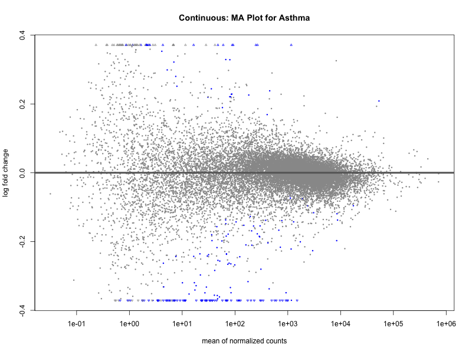 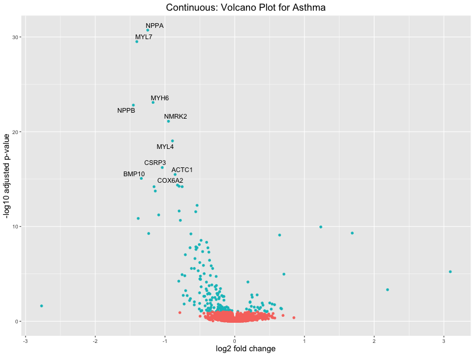 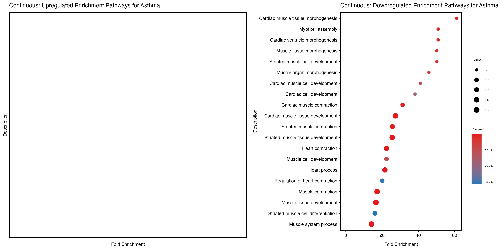
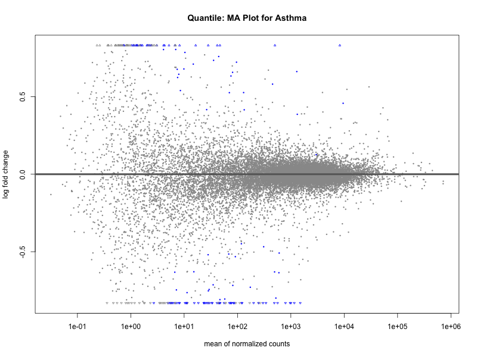 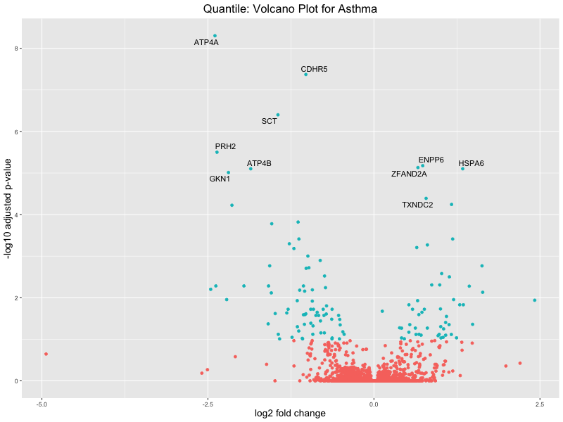 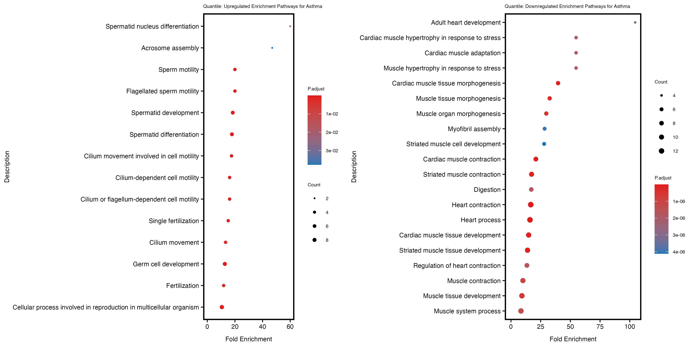
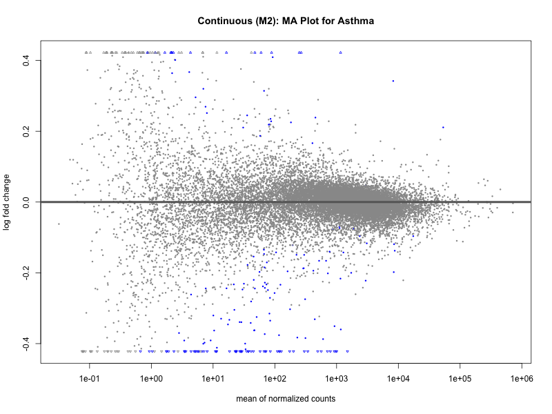 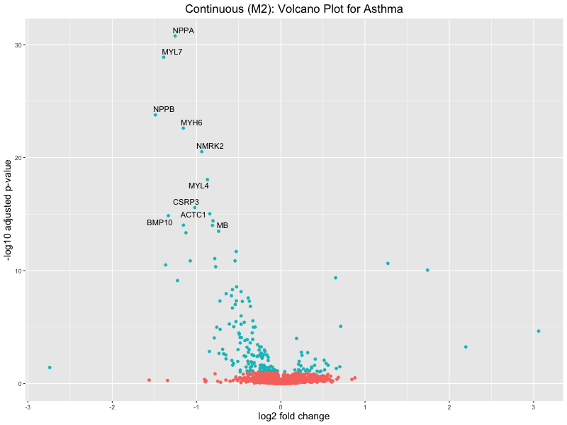 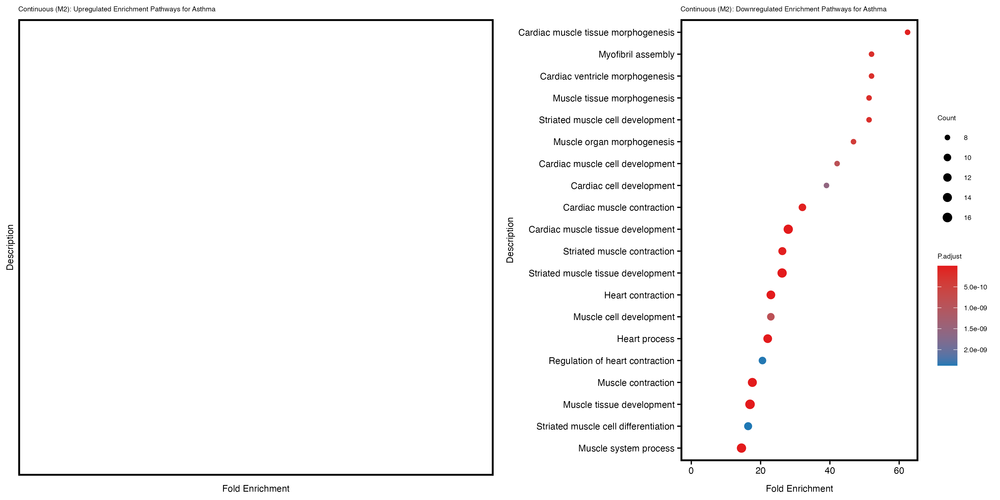
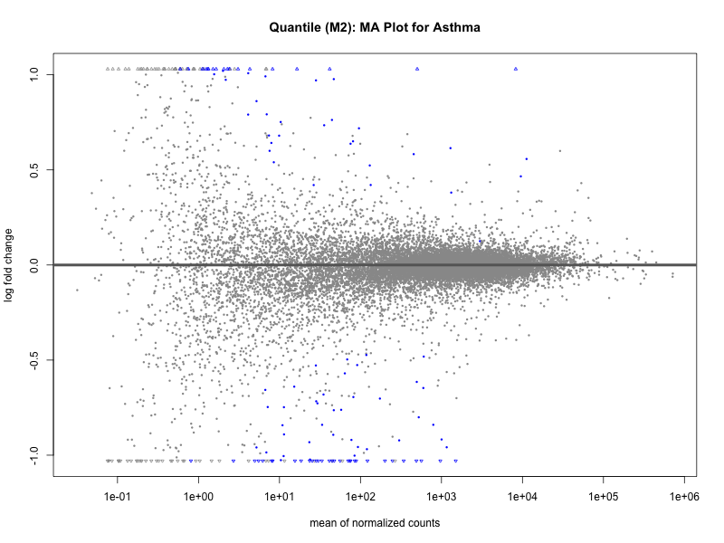 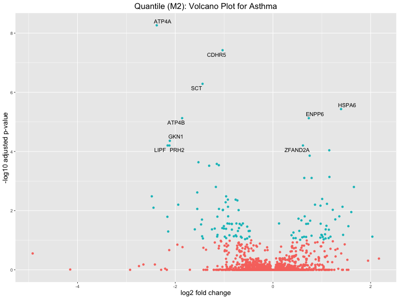 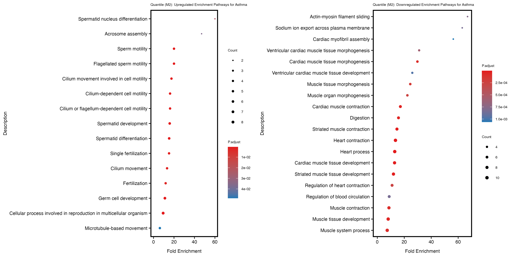
sessionInfo()R version 4.2.2 (2022-10-31)
Platform: x86_64-apple-darwin17.0 (64-bit)
Running under: macOS Big Sur ... 10.16
Matrix products: default
BLAS: /Library/Frameworks/R.framework/Versions/4.2/Resources/lib/libRblas.0.dylib
LAPACK: /Library/Frameworks/R.framework/Versions/4.2/Resources/lib/libRlapack.dylib
locale:
[1] en_US.UTF-8/en_US.UTF-8/en_US.UTF-8/C/en_US.UTF-8/en_US.UTF-8
attached base packages:
[1] stats4 stats graphics grDevices utils datasets methods
[8] base
other attached packages:
[1] gridExtra_2.3 clusterProfiler_4.6.2
[3] enrichplot_1.18.4 org.Hs.eg.db_3.16.0
[5] AnnotationDbi_1.60.2 genekitr_1.2.8
[7] ggrepel_0.9.6 BiocParallel_1.32.6
[9] DESeq2_1.38.3 SummarizedExperiment_1.28.0
[11] Biobase_2.58.0 MatrixGenerics_1.10.0
[13] matrixStats_1.2.0 GenomicRanges_1.50.2
[15] GenomeInfoDb_1.34.9 IRanges_2.32.0
[17] S4Vectors_0.36.2 BiocGenerics_0.44.0
[19] corrplot_0.95 lubridate_1.9.4
[21] forcats_1.0.0 stringr_1.5.1
[23] dplyr_1.1.4 purrr_1.0.2
[25] readr_2.1.5 tidyr_1.3.1
[27] tibble_3.2.1 ggplot2_3.5.1
[29] tidyverse_2.0.0 data.table_1.16.4
[31] workflowr_1.7.1
loaded via a namespace (and not attached):
[1] shadowtext_0.1.4 fastmatch_1.1-6 plyr_1.8.9
[4] igraph_1.5.1 lazyeval_0.2.2 splines_4.2.2
[7] usethis_3.1.0 urltools_1.7.3 digest_0.6.37
[10] yulab.utils_0.2.0 htmltools_0.5.8.1 GOSemSim_2.24.0
[13] viridis_0.6.5 GO.db_3.16.0 magrittr_2.0.3
[16] memoise_2.0.1 remotes_2.5.0 openxlsx_4.2.5.2
[19] tzdb_0.4.0 Biostrings_2.66.0 annotate_1.76.0
[22] graphlayouts_1.0.1 vroom_1.6.5 timechange_0.3.0
[25] prettyunits_1.2.0 colorspace_2.1-1 blob_1.2.4
[28] xfun_0.50 callr_3.7.6 crayon_1.5.3
[31] RCurl_1.98-1.16 jsonlite_1.8.9 scatterpie_0.2.4
[34] ape_5.7-1 glue_1.8.0 polyclip_1.10-7
[37] gtable_0.3.6 zlibbioc_1.44.0 XVector_0.38.0
[40] DelayedArray_0.24.0 pkgbuild_1.4.6 scales_1.3.0
[43] DOSE_3.24.2 DBI_1.2.3 miniUI_0.1.1.1
[46] Rcpp_1.0.14 progress_1.2.3 viridisLite_0.4.2
[49] xtable_1.8-4 gridGraphics_0.5-1 tidytree_0.4.6
[52] europepmc_0.4.3 bit_4.5.0.1 profvis_0.4.0
[55] htmlwidgets_1.6.4 httr_1.4.7 fgsea_1.24.0
[58] RColorBrewer_1.1-3 ellipsis_0.3.2 urlchecker_1.0.1
[61] pkgconfig_2.0.3 XML_3.99-0.18 farver_2.1.2
[64] sass_0.4.9 locfit_1.5-9.8 labeling_0.4.3
[67] ggplotify_0.1.2 tidyselect_1.2.1 rlang_1.1.5
[70] reshape2_1.4.4 later_1.4.1 munsell_0.5.1
[73] tools_4.2.2 cachem_1.1.0 downloader_0.4
[76] cli_3.6.3 generics_0.1.3 RSQLite_2.3.9
[79] gson_0.1.0 devtools_2.4.5 evaluate_1.0.3
[82] fastmap_1.2.0 yaml_2.3.10 ggtree_3.6.2
[85] processx_3.8.5 knitr_1.49 bit64_4.6.0-1
[88] fs_1.6.5 tidygraph_1.3.0 zip_2.3.2
[91] KEGGREST_1.38.0 ggraph_2.1.0 nlme_3.1-160
[94] mime_0.12 whisker_0.4.1 aplot_0.2.4
[97] ggvenn_0.1.10 xml2_1.3.6 compiler_4.2.2
[100] rstudioapi_0.17.1 png_0.1-8 treeio_1.22.0
[103] tweenr_2.0.3 geneplotter_1.76.0 bslib_0.9.0
[106] stringi_1.8.4 ps_1.8.1 lattice_0.22-6
[109] Matrix_1.6-4 vctrs_0.6.5 pillar_1.10.1
[112] lifecycle_1.0.4 triebeard_0.4.1 jquerylib_0.1.4
[115] cowplot_1.1.3 bitops_1.0-9 httpuv_1.6.15
[118] patchwork_1.3.0 qvalue_2.30.0 R6_2.5.1
[121] promises_1.3.2 sessioninfo_1.2.2 codetools_0.2-20
[124] pkgload_1.4.0 MASS_7.3-58.1 rprojroot_2.0.4
[127] withr_3.0.2 GenomeInfoDbData_1.2.9 parallel_4.2.2
[130] hms_1.1.3 grid_4.2.2 ggfun_0.1.8
[133] HDO.db_0.99.1 rmarkdown_2.29 git2r_0.33.0
[136] getPass_0.2-4 ggforce_0.4.1 shiny_1.10.0
[139] geneset_0.2.7